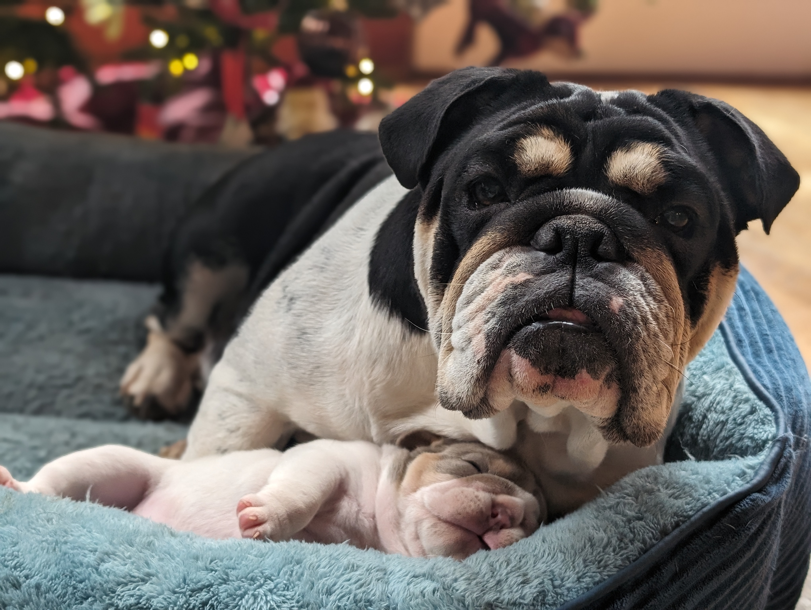
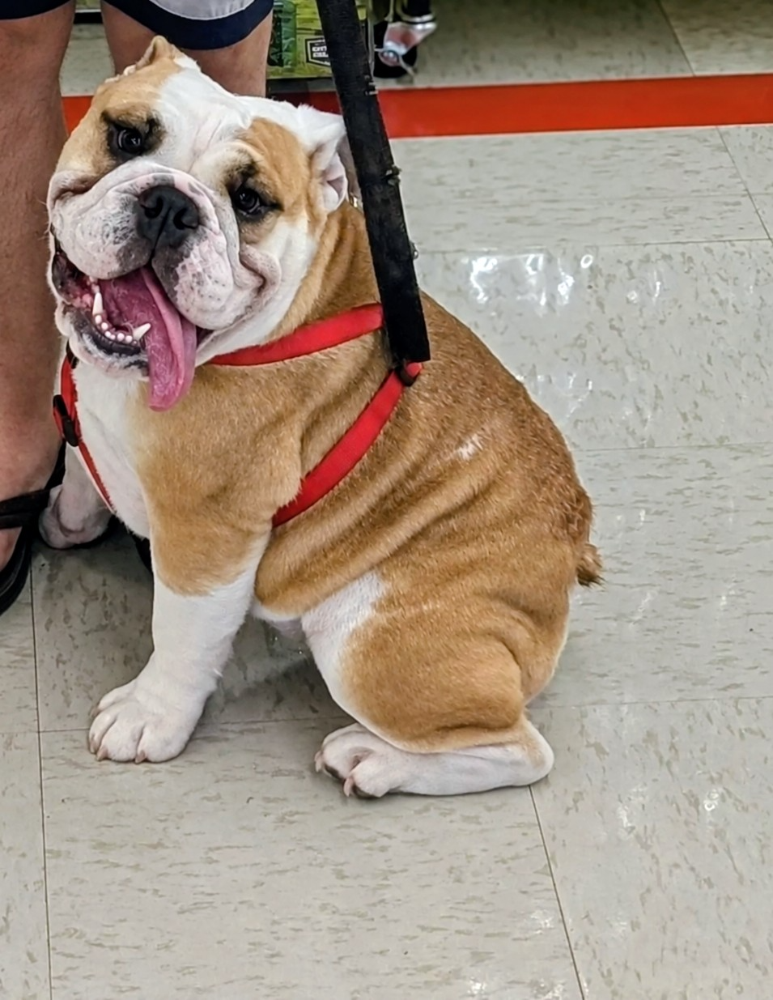
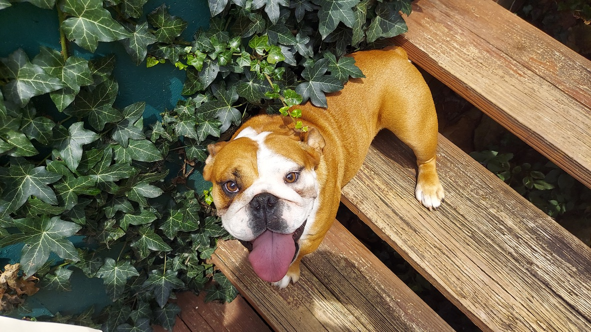
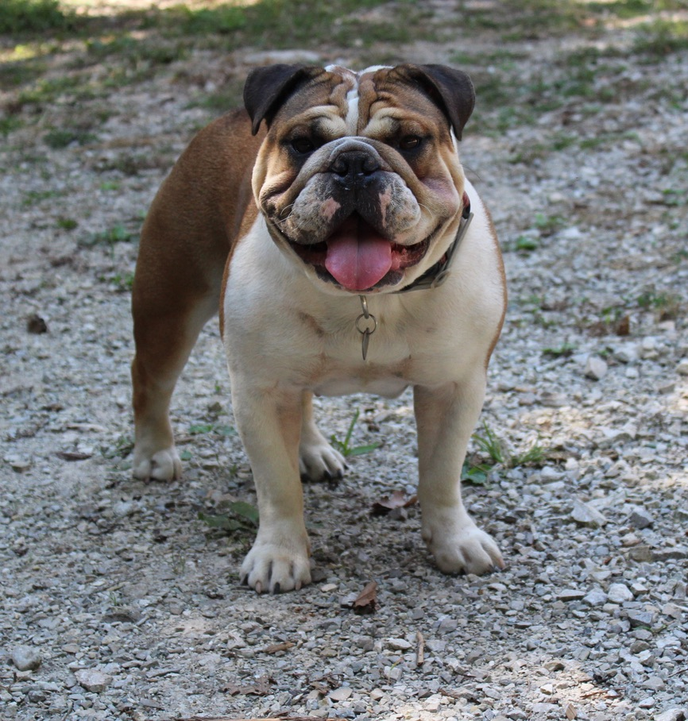

Our dams are the heart of our program. Each one is AKC registered, health-tested, and lives in our home as a beloved family member first — a breeding dog second. Meet the ladies.

AKC: Born 2019 · Black tri · ~40 lbs
Health: Agile and healthy, our most athletic girl.
Annie Marvel is Lucy's daughter and mom to Mia, Bilbo, and Birdie — a beautiful black tri who's held onto her agility and health. She's proof that Bulldogs can be both classic and capable, and she passes on her sturdy structure and her watchful, steady temperament to every litter.
AKC: AKC & International show lines · Red Panda's daughter
Health: Exceptional health and breathing.
Miss Beans is a very loving and sweet girl — the kind of Bulldog who leans into you the moment you sit down. With AKC and international show lines behind her and Red Panda as her dam, she brings exceptional health, easy breathing, and a temperament that's as wonderful as her pedigree. She's the heart of the house.


AKC: European import · Beautiful red color, smooth coat
Status: Retired from breeding, living her best life.
Red Panda is a beautiful European import with a stunning red coat and a smooth, clean structure. She's the dam behind some of our best dogs — including Miss Beans — and now she's retired from breeding and enjoying a well-earned life of leisure. She remains a beloved part of our family and the foundation of our program.
AKC: Fawn and white · Annie Marvel's dam
Status: Retired — living her best life as our son's best friend.
Lucy is retired from breeding and spending her days exactly where she belongs — right by our son's side. She's a fawn and white beauty with the classic Bulldog wrinkles and the soul of a best friend. She raised Annie Marvel, and now she's raising our boy. Some dogs just become family in every sense of the word.

Want to know which girl we're planning a litter with? Ask us — we're happy to talk breeding plans.
When we have a litter planned, our Available Puppies page is the first place it shows up.
See Available Puppies